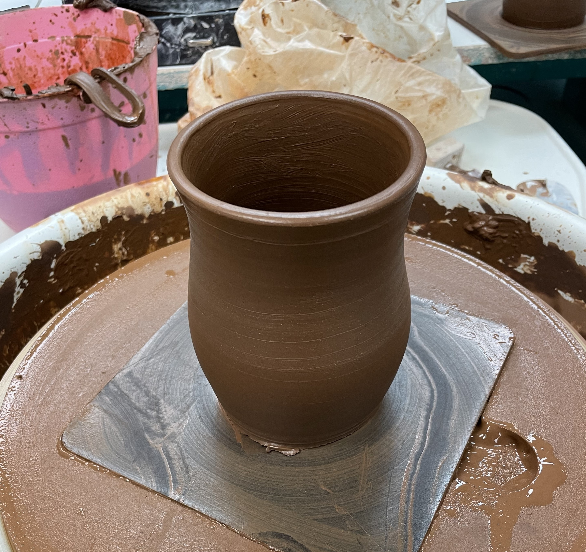
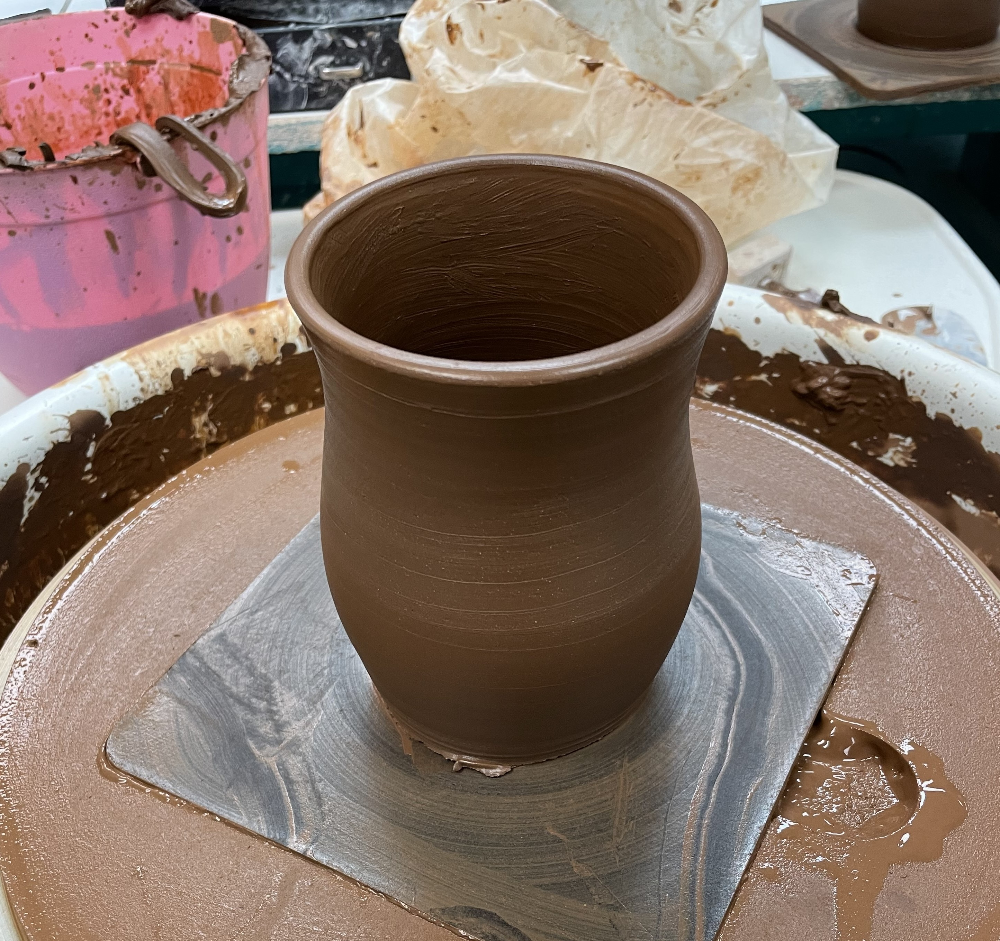
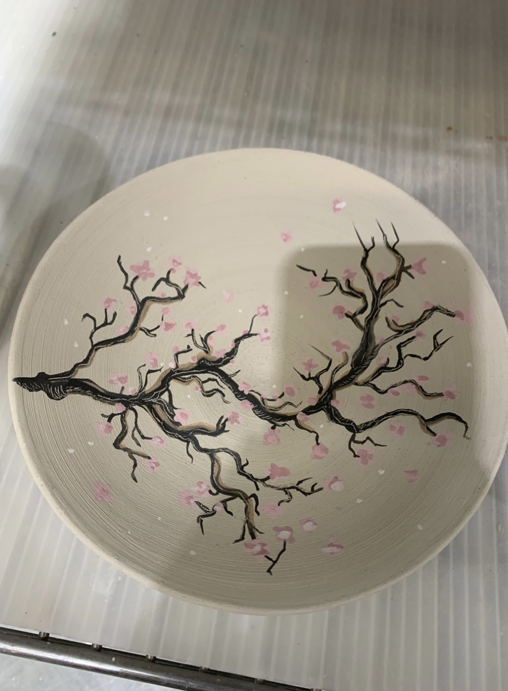
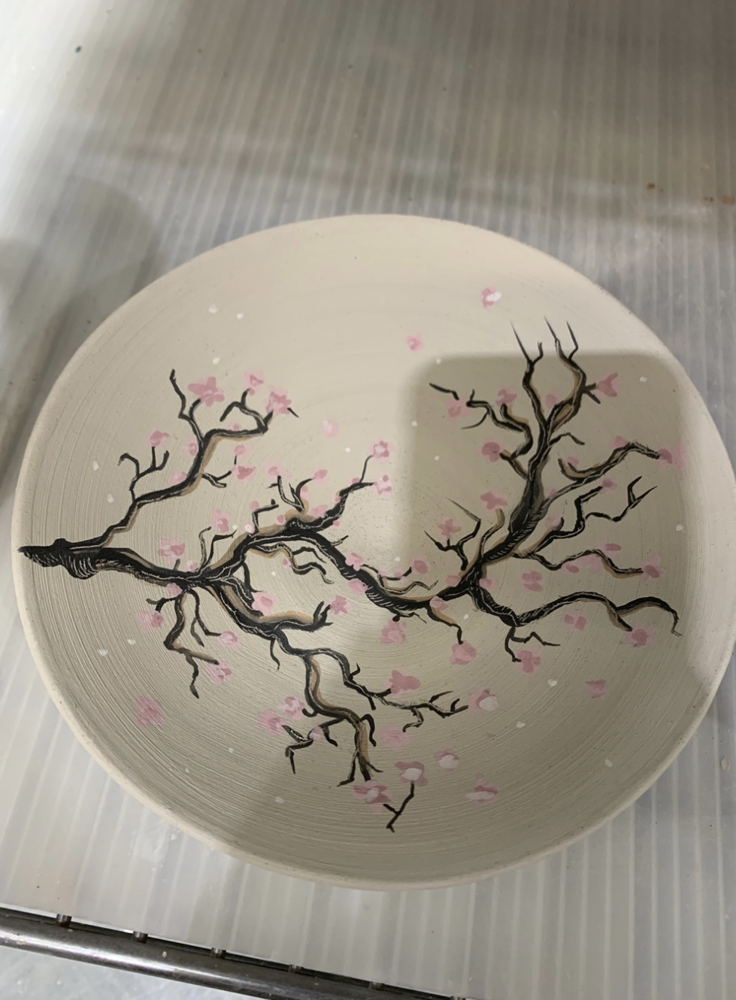

My name is Yazmin Valdivia, I am a local artist in Las Vegas, NV. I am the founder of Popunk orient, a company I created for my art. I love art and the many ways one can create it. My fields of art consist of pottery, painting and graphic design.When I'm not actively creating, I am at work. I am a case coordinator at a law firm and I enjoy working in the legal field. It creates a balance in my life. However, when I'm not at work, I enjoy creating art, attending rock/pop punk concerts, collecting and caring for plants, watching movies, traveling, and enjoying life.
POTTERY - Pottery is fun and endless, in which I enjoy doing. I love creating uniquely hand crafted pieces whether if it's for showcase or for use. I find myself calm in thepottery process. Pottery is very therapeutic and such a fun expressive art, it allows one to be creative. I enjoy the mechanics behind it when it comes down to glazing and firing the pieces. Everday I learn new techniques that help me adapt and grow as an artist.
 

 

FOODIE - I love food! I enjoy finding new places to eat and cross off on my bucket list. When cooking and eating food, I find that both love and creativity is added to every plate. Food is a form of art that many people like myself enjoy. I am a foodie, who enjoys the deliqucy of trying and experiencing new foods.